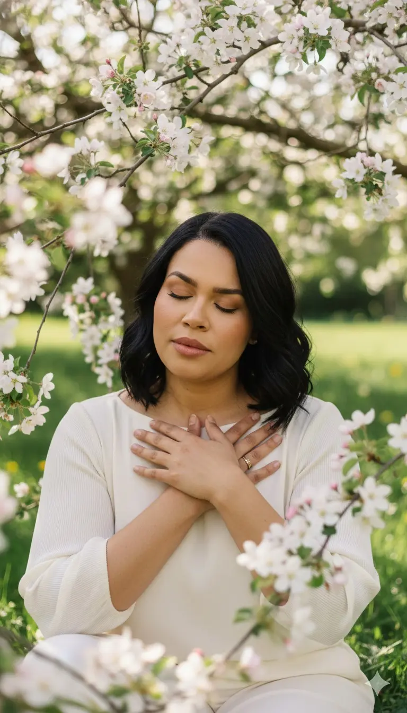

Renovar
suas intenções.
Reserve espaço para olhar o mês que começa e reconhecer o que você deseja nutrir na sua vida.
Que alegria receber você.
Obrigada por confiar nessa travessia. Bem-vinda à Vigília Sagrada 11:11: uma madrugada de fé, presença e reconexão com o Divino — e uma jornada que vamos preparar juntas.
11/11 · 03h da manhã Horário de Brasília · On-line
Seu primeiro passo
É lá que você receberá a preparação, as orientações dos materiais e os avisos do encontro. Sua presença faz parte dessa família.
Entrar no grupo da VigíliaO WhatsApp abrirá em outra aba. Depois, volte para conhecer o convite abaixo.

Um convite especial para a sua jornada
No primeiro dia de novembro, renove suas intenções e cuide do seu campo energético com o Abertura de Caminhos.
Abertura de CaminhosRenovar intenções e abrir espaço
Vigília SagradaAprofundar sua conexão com o Divino
Edição de 01 de novembro de 2026
O Abertura de Caminhos é um processo espiritual coletivo, executado de forma reservada pela Wall. Você pode seguir sua rotina: não precisa assistir a uma transmissão nem ficar acordada.
O procedimento não é transmitido ou gravado. O retorno é coletivo, sem devolutiva individual.
Presença, continuidade e ação
A espiritualidade também se cultiva na constância. Fazer o Abertura de Caminhos todos os meses é uma forma de voltar às suas intenções, renovar a conexão com o Divino e levar essa presença para os próximos passos.
Reserve espaço para olhar o mês que começa e reconhecer o que você deseja nutrir na sua vida.
Transforme esse cuidado espiritual em uma prática de presença e continuidade na sua jornada.
Receba os direcionamentos coletivos e leve suas intenções para escolhas e atitudes no dia a dia.
Seu próximo cuidado é o de 01/11. O convite à continuidade mensal não é uma assinatura: esta oferta é para uma edição.
Para decidir com tranquilidade
A equipe do Instituto está disponível para ajudar você.
Falar com o atendimento humano ↗Não. A Wall executa o processo de forma reservada em 01/11. Você pode seguir sua rotina normalmente. Não haverá transmissão nem gravação do procedimento.
O resultado geral e os direcionamentos coletivos serão compartilhados no grupo do Abertura de Caminhos. Após a compra, acompanhe as instruções de participação recebidas do Instituto.
No checkout, preencha o nome de batismo exatamente como consta na certidão e sua data de nascimento. Confira os dados antes de concluir e não os envie no grupo.
Não. O Abertura de Caminhos de 01/11 é uma compra adicional e opcional. O acesso ao grupo oficial da Vigília permanece disponível no botão verde desta página.
01/11 · Abertura de Caminhos
De R$ 97,00 por R$ 67,90 à vista. Economia de R$ 29,10 nesta oferta.
Quero aproveitar os 30% de desconto Entrar no grupo da Vigília ↗